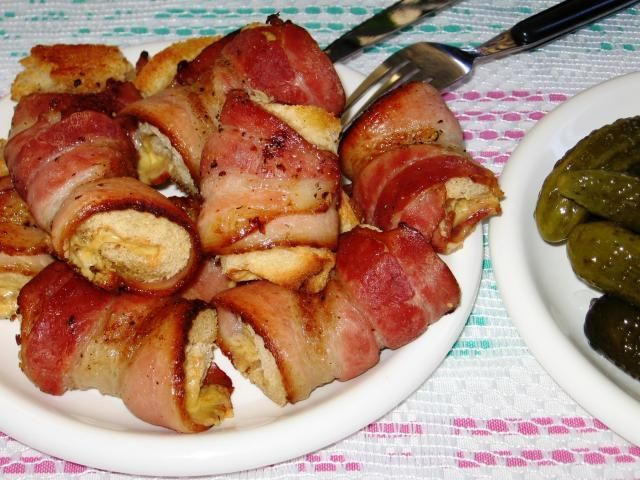

Bacon Rolls

Ingredients
- Bacon
- Rolls (e.g., bread rolls, croissants, puff pastry)
- Cheese (optional)
- Eggs (optional, for egg wash)
- Milk or butter (optional, for egg wash)
- Salt and pepper to taste
Instructions
- Preheat oven (if baking).
- Cook bacon until crispy (pan-fried or baked).
- Prepare rolls (slice, warm, etc., depending on type).
-
Assemble rolls: Place cooked bacon inside rolls. Add cheese if desired.
-
(Optional) Egg wash: Whisk egg with milk or melted butter. Brush on
rolls for a golden finish.
-
(Optional) Bake rolls until golden (if using egg wash or puff pastry).
- Serve warm.
Optional notes: You can add other fillings like avocado, tomato, or your
favorite sauces. Serve with a side salad.